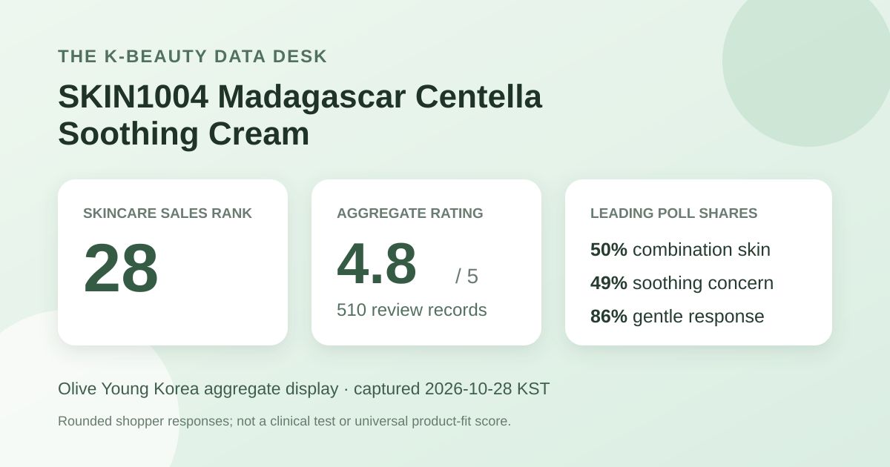
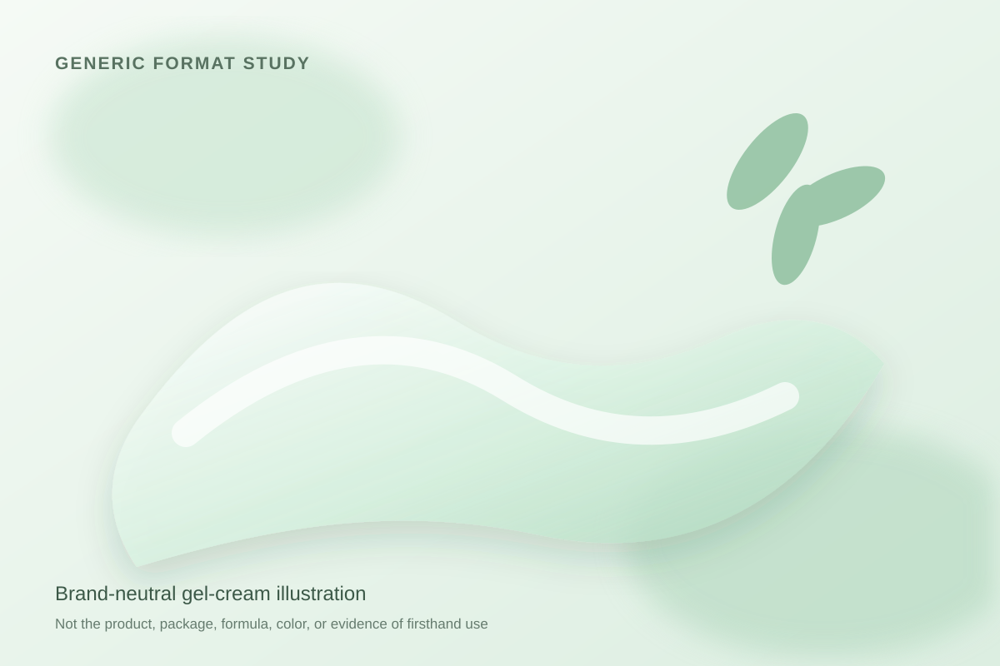

Data captured October 28, 2026. This analysis uses only Olive Young Korea's displayed aggregate rating, star distribution, anonymous shopper polls, and retailer-generated aggregate themes. It does not reproduce or translate individual review text, names, or photos.

The short version: The listing showed 4.8 out of 5 from 510 review records. Five-star selections made up 91% of the displayed distribution. Combination skin, soothing concern, and the gentle response led the three shopper polls, while the retailer's automated recent-review summary classified 88% as positive.
The visible average was 4.8 stars. The product header displayed 510 review records, and opening the detailed review view repeated the 4.8 score and 510-record total. This agreement reduces the risk of attaching a review block to the wrong listing. It does not establish that every record reflects the exact 75 ml package, price, seller condition, or formulation visible on the capture date.
The detailed panel displayed these rounded shares:
The five displayed rows total 100%. Five-star selections dominate, but the distribution cannot explain why shoppers chose a score, whether a review was submitted after long-term use, or whether expectations were shaped by promotions. A retail average is a satisfaction signal. It does not measure hydration, redness, barrier function, irritation risk, or any other biological endpoint.
A base of 510 records is more informative than a handful of responses, yet it remains a self-selected retail sample. People who review may differ from people who buy and remain silent. The interface did not provide an independently audited purchaser census or a stable denominator for each poll. Treat the figures as a snapshot of what the retailer displayed on October 28, not as population-level evidence.
The skin-type poll showed 50% combination, 30% dry, and 20% oily. Combination skin was the largest response group, but half the displayed responses came from the other two lanes together. This is useful context for who answered the poll; it is not proof that the cream performs better for combination skin.
Self-described skin type can shift with weather, cleansing, medication, climate, and the rest of a routine. The page did not expose controlled outcomes split by skin type. A 20% oily share does not establish a lightweight finish, and a 30% dry share does not establish enough occlusion for dryness. Those questions require actual formula information, directions, and personal testing that this dataset does not supply.
The concern poll displayed 49% soothing, 48% hydration, and 2% wrinkle or brightening concern. The displayed rows total 99% because the retailer rounds them to whole numbers. Soothing led hydration by only one point, which is too small to turn into a strong hierarchy.
These labels are shopper concerns, not measured outcomes. No redness scale, inflammatory marker, discomfort score, corneometry reading, transepidermal water-loss measurement, barrier-recovery test, comparator, or defined treatment period appeared in the captured source. The defensible statement is that soothing and hydration were nearly tied as the dominant concern labels.
The irritation poll showed 86% gentle, 12% ordinary, and 2% felt irritation. Gentle was the clear leading response. Still, the result is not a safety rate. It comes from subjective retail responses, and the page does not show that every reviewer answered the poll or used the same routine.
Two percent selecting felt irritation matters because an aggregate cannot predict an individual's tolerance. Existing sensitivities, concurrent exfoliants or retinoids, cleansing habits, frequency, and application amount can all shape experience. The current regional label should determine directions and precautions. Stop if discomfort develops rather than letting a high average overrule an individual reaction.
The retailer's automated recent-review summary displayed 88% positive. It grouped recent discussion into three broad topics: a fresh gel-type feel with quick settling, soothing impressions connected by the retailer to the product's centella positioning, and easy spreading or makeup-prep impressions. These are anonymous aggregate themes generated by the retail interface, not quotations or verified outcomes.
The summary does not disclose a clinical protocol, a full-population denominator, or enough methodological detail to convert 88% into a buyer-wide satisfaction rate. Its wording may also blend subjective impressions with product marketing. I therefore use it only as a map of recent discussion: lightweight-feeling texture, calming impressions, and spreadability were common enough for the retailer to surface. I do not repeat individual review sentences, names, or photos.

The automated summary described a gel-type feel, and the product is sold as a soothing cream. In general cosmetic language, a gel-cream is a semisolid leave-on format positioned between a watery gel and a richer cream. That broad category does not define viscosity, oil content, polymer system, finish, evaporation rate, or occlusivity.
I did not handle or apply this product. The illustration above is intentionally generic and should not be read as a reconstruction of the actual color, slip, scent, absorption, tack, residue, cooling sensation, or makeup compatibility. The source title contains “centella,” but this analysis did not independently verify an ingredient list, plant fraction, extraction method, concentration, delivered amount, or mechanism. Product-name language is identification, not a clinical claim.
At capture, the Korean product page showed a ₩23,000 reference price and a ₩19,000 displayed sale price for 75 ml. Prices, coupons, gifts, inventory, delivery timing, and regional availability can change. These details are a dated storefront anchor rather than a durable value judgment.
Review records may span different promotions, dates, or packaging conditions. Before comparing value, verify the current seller, included volume, ingredient list, package directions, return terms, and shipping status. The 510-record total cannot prove that every record was submitted under the same price or fulfillment conditions shown on October 28.
The narrow reading is straightforward. SKIN1004 Madagascar Centella Soothing Cream was the first valid unpublished candidate after 27 higher-ranked listings matched products or product families already covered here. It held skincare sales rank 28. Its header and detailed review view agreed on 4.8 stars across 510 records. Five-star selections accounted for 91% of the displayed distribution, combination skin led the skin-type poll, soothing and hydration were almost tied in the concern poll, and 86% selected the gentle response.
The aggregate is encouraging as a retail satisfaction snapshot, but it cannot establish that the product will soothe, hydrate, or suit a particular skin type. The automated themes suggest that recent discussion often involved a fresh gel feel and easy spreading, yet those remain subjective impressions. Use this page as a compact evidence map, then check the current local label and decide according to your routine, preferences, and tolerance.
Method note: Numbers are transcribed from Olive Young Korea's live aggregate display on the capture date. Percentages are reported as displayed and are not converted into estimated respondent counts. Individual review text, reviewer names, and product or reviewer photographs were not copied, translated, or reproduced. This is editorial analysis, not medical advice or a claim of firsthand use.
Source: Olive Young Korea product page (captured October 28, 2026). Store links contain no affiliate ID.
← All reviews · Review-volume rankings · Skin-type poll index · Methodology